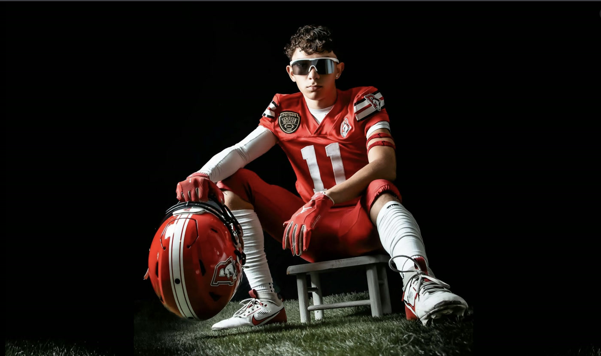
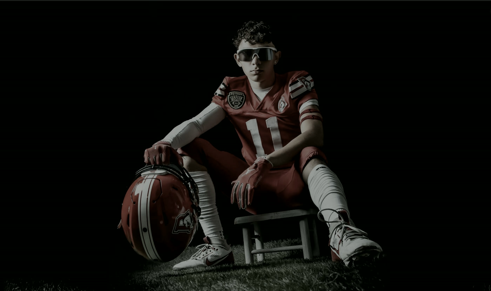
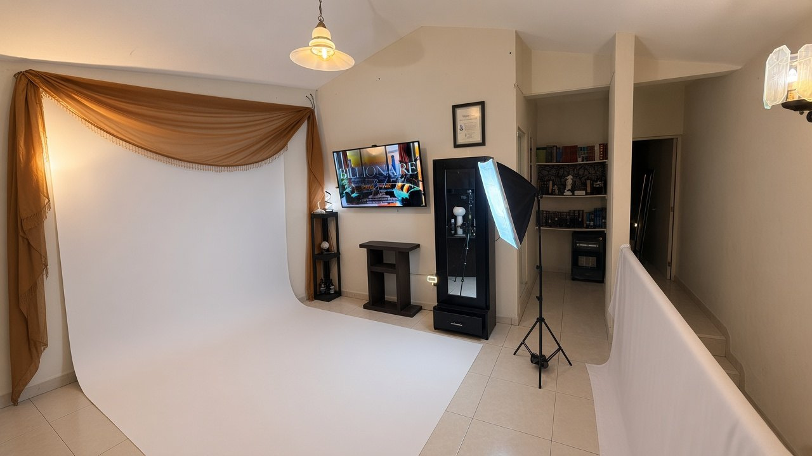

¿TU FOTO SE VE PLANA?
LA LUZ LO CAMBIA TODO


ANTES · LUZ PLANA
DESPUÉS · LUZ CAPTOORA

SET PROSoftbox + Luz
MONTERREYColinas
GUÍA REALPose y cámara


@captoora.studio
Colinas, MTY
Seguir
COMENTA: SESIÓN
WA 81 4005 0088